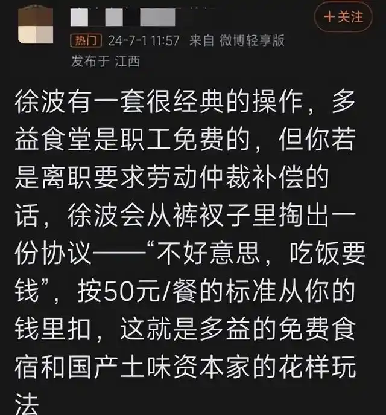
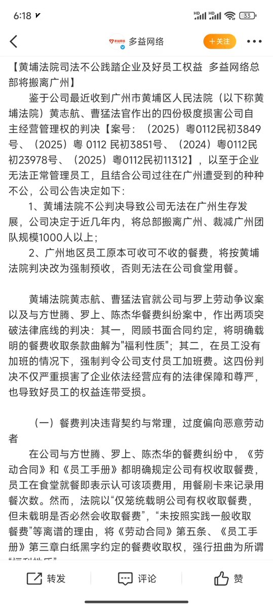

拱北靠北
@psyofsouthwest
@plantegg 被女权团伙搞得在自家公众号上八卦自家老板


plantegg
@plantegg
徐波，也就是多益网络真实流氓也会武术的极品，跟律师埋下各种钩子，比如入职告诉你食堂免费的，但是 50 块一餐，你不用交钱了，同时协议里写公司有权索要这 50 块，如果你不听话就把这餐费拿出来打官司
徐波应该是个控制欲强悍的人，怀疑整个世界，找女朋友也是各种套路，他不高兴就会各种拿回钱办法 https://t.co/ub2pAse2DM